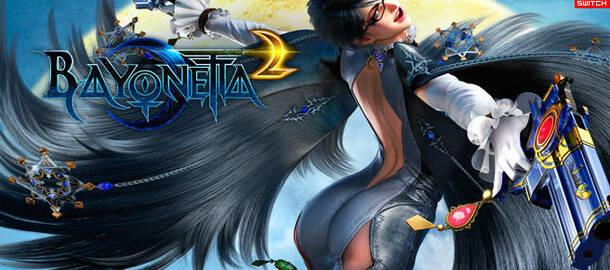
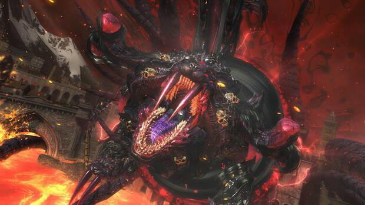
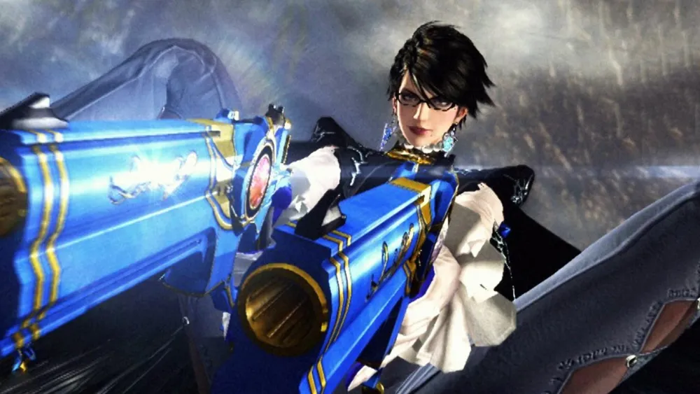

Bayonetta 2
Análisis de Bayonetta 2
Bayonetta 2 es, al igual que su predecesor, un hack & slash clásico, con combates,
combos espectaculares, diferentes armas, pequeños puzles, bastante exploración y coleccionables.
Y al igual que su predecesor, es un juego de PlatinumGames (de los buenos, de los hechos con un presupuesto decente),
lo que significa que siempre va a más. Incluso cuando piensas que no puede ir a más, lo consigue.
Y ojo, que si esto no es fácil de por sí, más difícil lo hace retomar la historia después de la primera entrega. No nos referimos
a nivel argumental, sino a nivel jugable. Sabéis que muchos títulos de este género cuando tienen una secuela se buscan cualquier
excusa para que el protagonista pierda los poderes y tenga que empezar desde cero otra vez. Aquí no. PlatinumGames nos devuelve
el control de Bayonetta casi donde lo dejamos, y ofreciéndonos nuevas opciones de progresión.

A un nivel muy alto también está el apartado sonoro. Desde la banda sonora hasta los efectos de sonido,
pasando por las voces inhumanas de los enemigos o un doblaje que dota a los personajes de todavía más carisma,
es un apartado prácticamente redondo. Y, una vez más, la traducción es excelente. No hay voces en castellano,
pero al menos los textos son geniales.

Bayonetta en tu casa, Bayonetta en la calle
Bayonetta 2 se estrenó en Wii U, que era limitadamente portátil es decir, nos permitía jugar en el GamePad,
pero ya nos ofreció un primer atisbo de lo que podría ser esta versión de Switch, que mantiene el control táctil
diseñado para su hermana mayor. Este título en el modo portátil de la consola es sencillamente un espectáculo.
Sí, tiene algunas caídas en la tasa de imágenes por segundo, pero creemos que el sacrificio es comprensible teniendo
en cuenta el nivel gráfico del título. Al menos en nuestro caso, no nos han molestado en absoluto, y sólo han sido realmente
perceptibles en casos puntuales.

Regresar